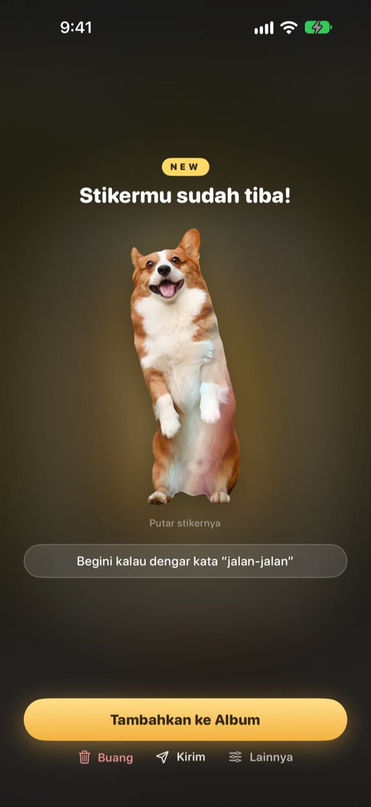
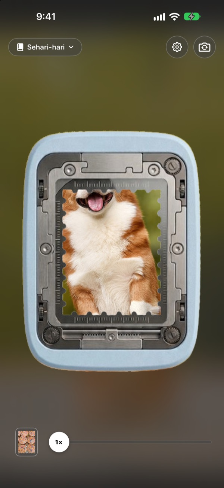
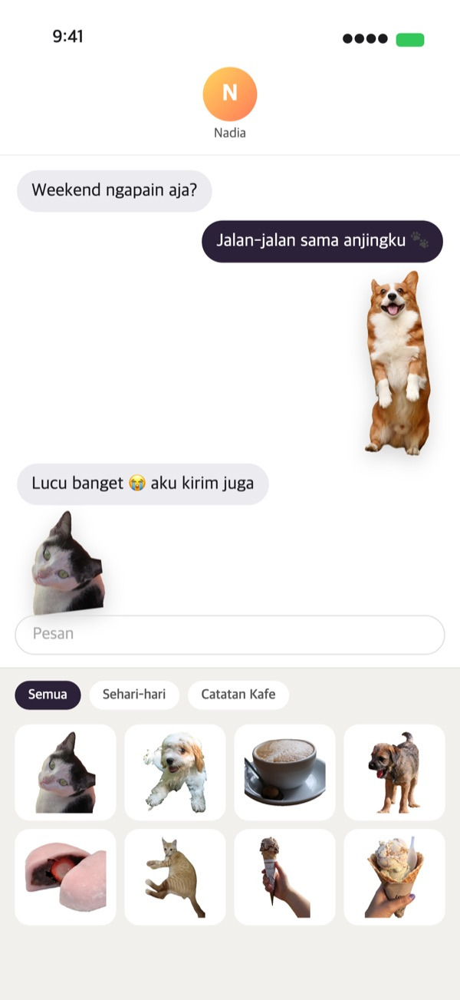
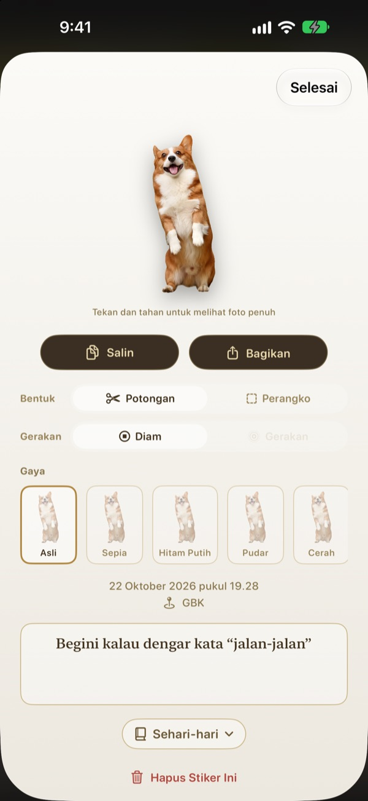
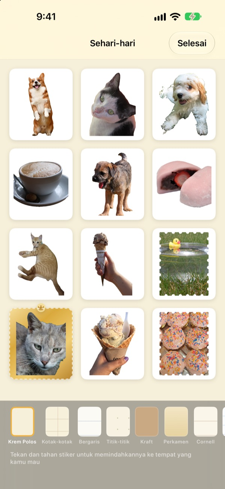

Tekan lama,
momen itu jadi stiker
Bidik adegan di jendela pelubang, tekan lama lalu lepaskan. Anjingmu terpotong persis mengikuti bentuk tubuhnya, lengkap dengan gerakan singkat sebelum dan sesudah ditekan. Stikernya bisa langsung dikirim dari Pesan atau keyboard.
Semua fitur gratis. Stiker dan foto hanya disimpan di perangkatmu.

Coba sobek sendiri
Pilih adegan, tekan lama tombol pelubang, lalu lepaskan. Setelah jadi, coba ganti bentuk dan nuansanya.
Momen menggemaskan sering tertidur di galeri
Kamu berhasil memotret anjingmu menjulurkan lidah. Untuk mengirimnya sebagai stiker, kamu harus mencari fotonya, memotongnya, lalu membuka aplikasi stiker lain. Saat selesai, obrolan sudah pindah topik. Punching menyobek stikernya di tempat, dan begitu kamu simpan ke album, stiker itu sudah ada di laci stiker Pesan.
Subjek dipotong, pemandangan jadi perangko
Kalau ada yang bisa dipotong, seperti orang, hewan peliharaan, atau benda, hanya sosok itu yang diambil. Kalau tidak ada, seperti pemandangan, gambarnya disobek jadi perangko bertepi bergerigi.
Gerakan singkat sebelum dan sesudah ditekan ikut tersimpan, jadi stikernya bergerak.

Langsung di Pesan dan keyboard
Stiker yang kamu sobek muncul di laci stiker aplikasi Pesan. Aktifkan keyboard Punching, dan kamu bisa memilih lalu menempelkannya di aplikasi lain juga.
Stiker bergerak tetap bergerak saat dikirim. Tekan lama untuk menyalin, lalu tempel di mana saja.

Ganti bentuk dan nuansa kapan saja
Beralih antara potongan dan perangko, bergerak dan diam, sesukamu. Foto aslinya tetap disimpan, jadi berapa kali pun diganti, hasilnya tetap setajam pertama kali.
Pilih nuansa Asli, Sepia, Hitam Putih, Pudar, Cerah, atau Sian, lalu tambahkan catatan, tanggal, dan tempat.

Kumpulkan di album, cetak jadi stiker kertas
Buat album per tema, dan di Pesan maupun keyboard kamu bisa memilih per album. Pilih latar kertas kraft, kotak-kotak, bergaris, atau perkamen, lalu atur urutannya sesukamu.
Ubah album jadi PDF siap cetak dengan garis potong berbentuk perangko, lalu cetak langsung di kertas stiker.

Mulai dalam tiga langkah
- 1
Bidik di jendela
Masukkan yang ingin kamu simpan ke jendela di tengah kamera.
- 2
Tekan lama, lalu lepas
Stiker tersobek tepat saat jarimu terangkat.
- 3
Simpan dan kirim
Masukkan ke album, dan stiker langsung siap di Pesan dan keyboard.
Pakai di mana, ubah di mana
- Pesan
- ＋ di samping kolom teks ▸ Stiker ▸ Stiker Punching
- Aplikasi lain
- Aktifkan keyboard Punching, beralih dengan tombol bola dunia, lalu pilih dan tempel
- Di mana saja
- Tekan lama stiker untuk menyalin, lalu tempel
- Stiker kertas
- ⋯ di album ▸ Gunakan ▸ Lembar Stiker untuk Dicetak (PDF)
- Latar dan urutan
- ⋯ di album ▸ Hias Bebas
- Foto lama
- Impor dari Foto di album
- Bentuk awal
- Pengaturan ▸ Sobek ▸ Bentuk Default
- Melihat gerakan
- Pengaturan ▸ Tampilan ▸ Putar Gerakan Otomatis
- Buka cepat
- Buka Kamera Punching di Pintasan atau Pusat Kontrol
Pengaturan ada di tombol roda gigi di kanan atas layar kamera.
Pertanyaan umum
Stikerku tidak bergerak.
Di kanan atas kamera, buka Pengaturan ▸ Tampilan dan pastikan Putar Gerakan Otomatis menyala. Lalu ketuk stiker dan pastikan Gerakan di bawah Bentuk menyala. Gerakan selalu ikut direkam, jadi bisa dinyalakan kapan saja. Foto yang diimpor dari aplikasi Foto hanya satu bingkai, jadi tidak bergerak.
Yang keluar perangko, bukan potongan.
Adegan tanpa sesuatu untuk dipotong, seperti pemandangan, otomatis disobek jadi perangko. Ketuk stikernya untuk mengganti di Bentuk kapan saja. Kalau ingin langsung menyobek jadi perangko, ubah Pengaturan ▸ Sobek ▸ Bentuk Default.
Stikerku tidak muncul di Pesan.
Di Pesan, ketuk tombol ＋ di samping kolom teks ▸ Stiker, lalu cari Stiker Punching. Stiker muncul setelah kamu menyobek setidaknya satu stiker di Punching, dan kalau punya lebih dari satu album, kamu bisa melihatnya per album. Langkah lengkapnya ada di Pengaturan ▸ Gunakan ▸ Gunakan di Pesan dan Keyboard.
Bagaimana cara mengaktifkan keyboard?
Di Pengaturan ▸ Gunakan ▸ Gunakan di Pesan dan Keyboard, ketuk “Buka Pengaturan”, lalu buka Keyboard ▸ aktifkan Stiker Punching. Untuk menempel stiker diperlukan Izinkan Akses Penuh, tetapi keyboard tidak membaca atau mengirim apa yang kamu ketik dan tidak terhubung ke internet. Setelah itu, di aplikasi mana pun, ketuk tombol bola dunia untuk beralih ke Stiker Punching.
Aku ingin mencetak stiker sungguhan.
Ketuk ⋯ di kanan atas album ▸ Gunakan ▸ Lembar Stiker untuk Dicetak (PDF). Kamu akan mendapat PDF 300dpi untuk seluruh album dengan garis potong berbentuk perangko, siap dicetak di kertas stiker dengan printer rumah atau di percetakan. Langkahnya ada di Panduan Cetak pada menu yang sama.
Ke mana koleksi lamaku?
Sejak 1.0.1, stiker hanya dikelompokkan dengan satu cara: album. Setiap koleksi menjadi album dengan nama yang sama, dan stiker, latar, serta urutannya ikut pindah apa adanya.
Ada lampu hijau di bar status.
Itu indikator kamera iOS. Lampu hanya menyala saat layar kamera terbuka. Saat kamu membuka album, kamera berhenti dan lampunya padam.
Apa yang terjadi kalau stiker dihapus?
Stiker, foto asli, dan data gerakannya dihapus permanen dari perangkat, dan ikut hilang dari laci stiker Pesan. Tidak bisa dipulihkan, jadi hapus dengan hati-hati.
Di mana foto dan stikerku disimpan?
Hanya di perangkatmu. Tidak ada akun, tidak ada server milik kami, dan tidak ada iklan. Yang keluar dari perangkat hanya statistik penggunaan anonim, laporan error, dan masukan yang kamu kirim sendiri. Detailnya ada di Kebijakan Privasi.
Benar-benar gratis?
Ya, semua fitur gratis. Kalau suka, kamu bisa memberi tip untuk pengembang di dalam aplikasi, tetapi tip tidak membuka fitur apa pun.
Ada pertanyaan atau masukan? Kirim ke leeo@kakao.com. Biasanya kami membalas dalam 2 sampai 3 hari. Laporan bug dan usulan fitur juga bisa lewat issue di GitHub M1zz/StampCamera.